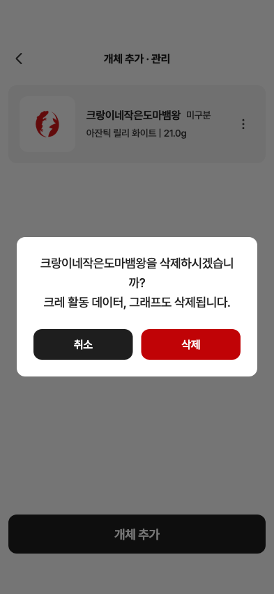

23 · 개체 삭제 확인창
23번 · 0.107.27+238 수정 화면 재확인
수정 완료
① ‘크랑이를 삭제하시겠습니까?’ 실제 이름·중앙 정렬
② 흰 바탕345×172pt·반경12·본문18pt
③ 균등한 검정/빨강 취소·삭제 버튼16pt
10자 이름도 줄바꿈으로 표시됩니다.
Figma 원본 · 345×172 23 · 수정 앱 · 345×172
23 · 수정 앱 · 345×172 공통 확인창 적용 후 원본 크기·폰트·색상·버튼·중앙 정렬을 측정했습니다.
개체 메뉴에서 확인창을 열고 취소했으며 삭제 콜백은 호출되지 않았습니다. 실제 삭제 범위나 서버 동작은 변경하지 않습니다.
전체 제품 위젯 캡처
10자 이름 검증

상세 측정·수정 제안